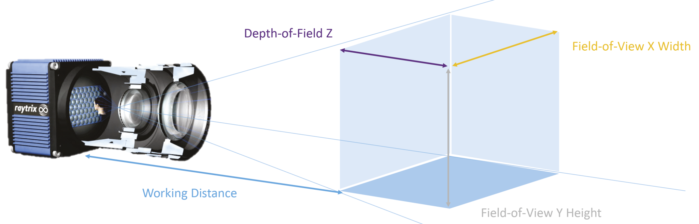

01 / Research Overview
Coral reef systems, especially soft corals, are a very vulnerable ecosystem that changes frequently with each pass of ocean wave movement. Unlike hard corals, soft corals lack a calcium carbonate skeleton, making them particularly sensitive to external environmental factors. Being able to model these ecosystems over multiple expeditions provides a valuable opportunity to compare changes and enhance our understanding of overall ecosystem dynamics and the effects of climate change.
The technical challenge arises from the difficulty of capturing the dynamic nature of soft corals. Traditional photogrammetric reconstruction techniques using 2D cameras or stereo vision do not effectively capture the dynamic behavior of soft corals, leading to inaccurate coral censuses and ecosystem health characterization. A monocular system capable of providing all the necessary information can simplify the reconstruction pipeline during expeditions and offer more efficient solutions for dynamic 3D reconstruction.
The research objective for this semester is to answer the question: “Can a single light field camera be used for accurate 3D dynamic reconstruction of soft corals?”
To formulate a more effective planner for this problem, the three core challenges to overcome: (1) capturing dynamic 3D data from our Lytro plenoptic (light field) camera, (2) ensuring accurate (3-5cm resolution) reconstruction of soft corals, and (3) evaluating the effectiveness of the Lytro plenoptic camera in modeling varying environmental conditions. In our Monocular Light Field approach, these challenges are addressed by leveraging the unique capabilities of light field technology, improving model accuracy, and streamlining the reconstruction process.
02 / Light-Field Camera
Plenoptic imaging is the concept that a single observation captures both spatial and angular information about a scene, providing a richer dataset than a traditional camera. In the context of 3D reconstruction, this means that instead of capturing only intensity values at each pixel, a plenoptic (light field) camera records the direction of incoming light rays, allowing for post-capture refocusing and depth estimation. These techniques are influenced by the camera’s baseline, resolution, and computational models, which must be carefully tuned for underwater applications where light refraction and many external factors affect image quality.
The camera used for this project is the Lytro Illum.

03 / More About the CREST Lab
The Climate Robotics and Expeditionary Science Technology Group has a vision to create intelligent robots for oceanographic/environmental sciences, collaborating with scientists to develop software for deep ocean exploration. Science questions inspire the work we do. The key question that encapsulates our project is: "how do we quantify how much an environment evolves over time?" We're inspecting this question with respect to two motivating application areas in deep ocean exploration and coastal ecosystem characterization.